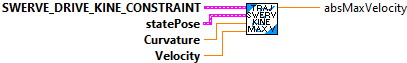
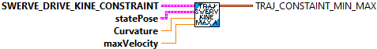

Constructs a swerve drive dynamics constraint.
Parameters:
- maxVelocity - Maximum allowed velocity.
- SwerveDriveKinematics - Data structure
Returns
- SwerveDriveKinematicsConstraint - Constraint data structure

Return the maximum allowed velocity given the provided conditions.
Parameters:
- SwerveDriveKinematicsConstraint - Constraint data structure
- statePose - current traj state Pose
- curvature - current traj curvature
- maxVelocity - current traj max velocity
Returns
- maxVelocity - Maximum allowed velocity.

Return the minimum and maximum allowed acceleration given the provided conditions.
It appears that this routine doesn't do anything. It returns default values.
Parameters:
- SwerveDriveKinematicsConstraint - Constraint data structure
- statePose - current traj state Pose
- curvature - current traj curvature
- maxVelocity - current traj max velocity
Returns
- TrajConstraint_Min_Max - Data structure with Min / Max acceleration.